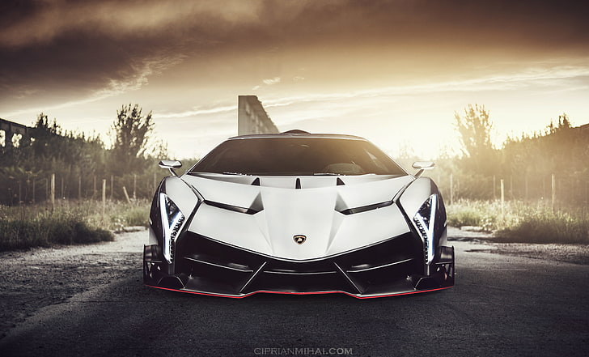
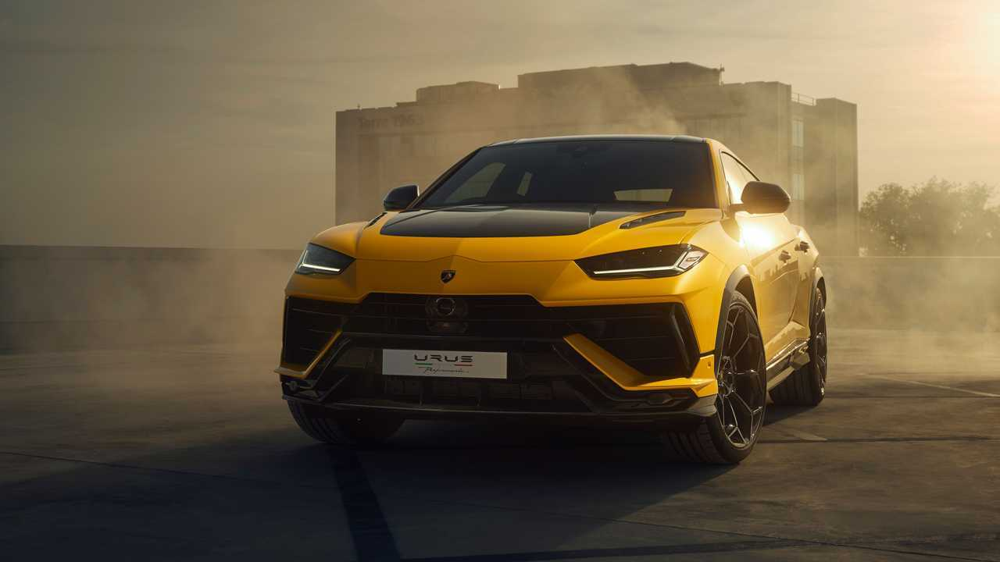

A Lamborghini Huracán é uma esportiva de nível básico da montada italiana, que entrou sob
o
Aventador na categoria mais recente da lista, atualizando o Gallardo. Ele foi mostrado para
grande espanto no Salão do Automóvel de Genebra de 2014, onde mostrou a versão mais recente do
carro esportivo V10 do Raging Bull. O LP610-4 Huracán tem 610 cv desde o início e pode ir de 0 a
60 mph em menos de 3 segundos. É abrangente e tem uma transmissão dupla de embreagem de cinco
marchas. O Huracán partilha mais semelhanças com o Audi R8, compartilhando várias peças,
principalmente o mesmo motor .o mesmo motor Isso é claramente um resultado da influência da
empresa mãe nas áreas de produção e decisão das atividades diárias.
Lamborguini Veneno
O Lamborghini Veneno é um supercarro de edição limitada celebrando o 50º aniversário da
Lamborghini. Revelado em 2013 no Salão do Automóvel de Genebra, o Veneno apresenta um design agressivo,
construção leve em fibra de carbono e é impulsionado por um motor V12 de 6,5 litros, gerando 750 cavalos de
potência. Com produção extremamente limitada, o Veneno é reconhecido como um dos supercarros mais exclusivos
e desejados da Lamborghini.
máxima velocidade que oque a Veneno pode atingir é de 355 km/h. três Foram
produzidas apenas recortarunidades unidades, cada uma simbolizando as três cores da bandeira italiana
carros custou 12 milhões de euros e foram todos vendidos

Lamborguini Revuelto
renomado fabricante italiano , é o criador do notável carro esportivo híbrido plug - in
conhecido como Lamborghini Revuelto, que tem edição limitada . Meticulosamente pensado como um sucessor do
Aventador, este veículo é o sexto da linha da marca para apresentar um motor impressionante, o V12. Abaixo
da boné , há umum motor V12 6,5 litros6,5 litros que gera impressionantes 1.015 cavalos de potência. Motor
V12 que gera impressionantes 1.015 cavalos de potência. O Revuelto combina de forma inovadora três motores
elétricos, resultando em uma potência combinada fenomenal de 1.015 cavalos, além de herdar uma versão
aprimorada do motor de 12 cilindros do seu antecessor.
Lamborghini Aventador
O Lamborghini Aventador é um carro esportivo elétricoesportivo com motor central
produzido pela Lamborghini, empresa italiana, e tinha como objetivo substituir o Murciélago Anunciado no
dia 28 de fevereiro de 28,2011, no Salão Automóvel de Genebra, o Aventureiro presta homenagem a um passeio
lendário dos anos 90, conhecido como o animal mais nervoso que já atacou a Praça de Touros de Saragoça
.2011.
Equipado com um poderoso 6,5 litrosmotor V12 de V12que produz 700 cavalos, o Adventurer tem um desempenho
impressionante , acelerando de 0 a 100 km/h em 2,9 segundos e atingindo velocidade máxima de 350 km/h.Com
motor que produz 700 cavalos de potência, Com chassi de fibra de carbono e usando
suspensão de Fórmula 1, o Aventador combina velocidade, potência e tecnologia de ponta.
Lamborguini Urus

O Lamborghini Urus é o primeiro Super Sport Utility Vehicle do mundo, fundindo a alma de
um superesportivo
com a funcionalidade prática de um SUV. Equipado com o motor V8 biturbo de 4,0 litros da Lamborghini, o Urus
tem tudo a ver com uma mentalidade de desempenho que reúne diversão de dirigir e capacidades surpreendentes
do veículo. O design, o desempenho, a dinâmica de condução e a emoção desenfreada fluem sem esforço nesta
concretização visionária do autêntico ADN da Lamborghini.